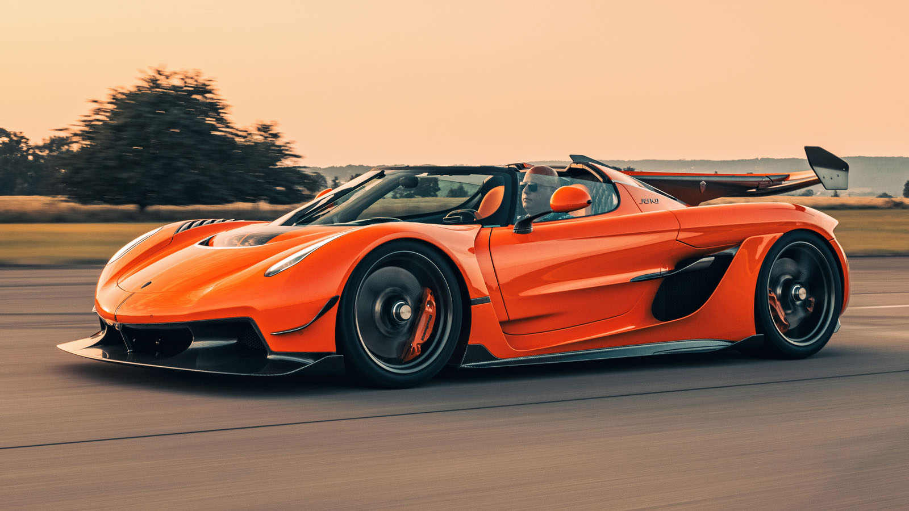

Koenigsegg Jesko
The Koenigsegg Jesko is a mid-engine hypercar produced by Swedish automaker Koenigsegg, named after Jesko von Koenigsegg.
Engine: 5.0L twin-turbo V8 (180° flat-plane crankshaft)
Power & Performance
- Horsepower: 1,280 hp (Pump Gas)
- E85 Biofuel: 1,600 hp & 1,500 Nm
- Transmission: 9-speed LST
- Downforce: Up to 1,000 kg